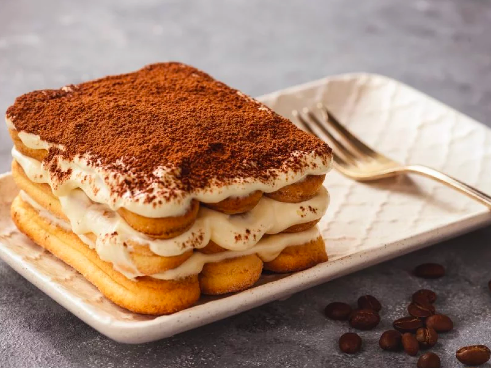

Tiramisu
Carbonara
Risotto
Tiramisu
Desrciption
Tiramisu, meaning "pick me up" in Italian, is a heavenly dessert that combines layers of coffee-soaked
ladyfingers with a velvety mixture of mascarpone cheese, eggs, and sugar. This iconic sweet treat is then
dusted with cocoa powder, creating a delightful contrast of textures and flavors. The combination of the coffee's
bitterness, the creaminess of mascarpone, and the sweetness of the ladyfingers results in a dessert that is both
sophisticated and comforting. Tiramisu is the perfect way to end an Italian meal on a sweet note, leaving
a lasting impression on your taste buds.
Ingredients
- 1 cup strong brewed coffee, cooled
- 3 large eggs
- 1 cup granulated sugar
- 1 teaspoon vanilla extract
- 500g mascarpone cheese
- 24-30 ladyfinger cookies (savoiardi)
- Unsweetened cocoa powder for dusting
- Dark chocolate shavings (optional)
How to Prepare
- Brew a strong cup of coffee and allow it to cool to room temperature.
- In a large mixing bowl, beat the eggs and sugar together until the mixture becomes pale
and slightly thickened. Add the vanilla extract and mix well.
- Add the mascarpone cheese to the egg mixture, beating until smooth and well combined.
- Dip each ladyfinger into the cooled coffee, making sure they are moistened but not soaked.
- Arrange a layer of dipped ladyfingers in the bottom of a serving dish.
- Spread half of the mascarpone mixture over the ladyfingers layer.
- Repeat with another layer of dipped ladyfingers and the remaining mascarpone mixture.
- Refrigerate the tiramisu for at least 4 hours or overnight to allow the flavors to meld.
- Before serving, dust the top with cocoa powder and garnish with dark chocolate shavings if desired.
Cut into portions and enjoy this delightful Italian dessert.
